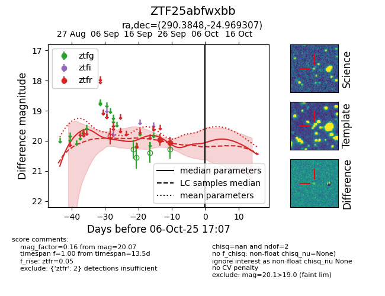
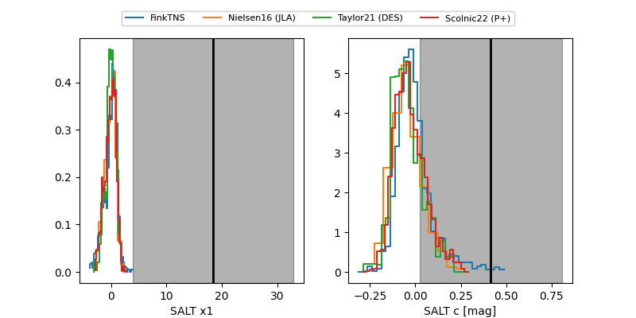

FINK: ZTF25abfwxbb
Lasair: ZTF25abfwxbb
ALeRCE: ZTF25abfwxbb
ZTF25abfwxbb (ztf,fink)
equatorial (ra, dec) = (290.3848,-24.96931)
galactic (l, b) = (13.2451,-17.34642)


last ztfr=20.07
2 ztfr detections